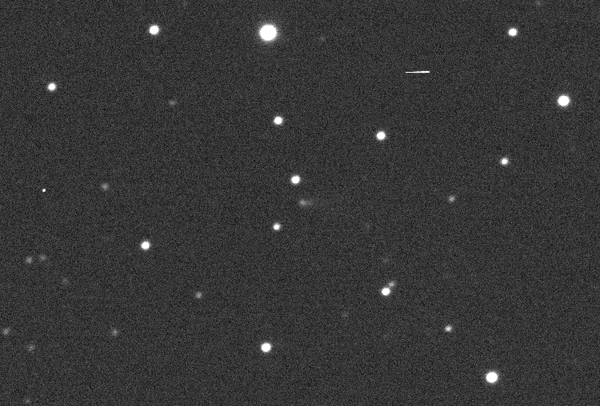

COMET P/2021 U3 (Attard-Maury)
8 time series images taken on the LCO 2-metre telescope of Comet P/2021 U3

Interacting Galaxies
RGB FITS files for some interacting galaxies in different stages of merging. Contains M51, NGC1316, NGC1487, NGC2207, NGC4038, and NGC6050. More on their way!